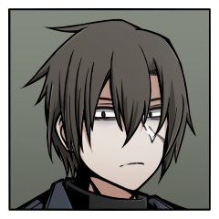

- 登場人物 -

安武 陸
就活中ハンター

赤木 叶恵
D7所属の接触者

敷村 修也
なりたてハンター

迷ノ宮 光葉
八角宗家のお嬢様

海野 標
陸の師匠

赤木 恵夢
叶恵の姉

灰葉 陽
修也の近所のお姉さん

迷ノ宮 御影
光葉の兄
プレイヤーキャラクター
PC1
安武 陸
（やすたけ りく）
【防御力】0 【行動力】2
幸福「背徳：海野標」《日常》強度3
──彼がこの世界に存在するためなら、何を犠牲にしても仕方がないと思える。
幸福「背徳：バレエ・メカニック」《自信》強度1
──彼がもたらしたものは多い。あの魔女に出会えたことは、確かに幸福だった。
PC2
赤木 叶恵
（あかぎ かなえ）
【防御力】2 【行動力】0
幸福「背徳：赤木恵夢」《人脈》強度3
──姉を縛りつけて、その人生を自分のために使わせたい。
……そうあって欲しかった。
……そうあって欲しかった。
幸福「背徳：幸せに生きる」《地位》強度1
──家族と共に、幸せに生きよう。何かを踏み台にしても。
PC3
敷村 修也
（しきむら しゅうや）
【防御力】2 【行動力】0
幸福「約束」《人脈》強度1
──ひなちゃんとの最後の約束。漠然とした生きる目標。
幸福「背徳：ひなちゃん」《自信》強度3
──あの運命に置いてきたつもりの想いと、しみついた執着。
PC4
迷ノ宮 光葉
（まよいのみや みつは）
【防御力】0 【行動力】2
幸福「仲間の皆」《日常》強度3
──皆を守りたい。
幸福「背徳：迷ノ宮 御影」《人脈》強度1
──気持ちの通じ合ったお兄様への未練。
ノンプレイヤーキャラクター
海野 標（うみの しるし）
陸の師匠。高校三年生。無所属のハンターであり、半吸血鬼。若くして実力を広く認められている。
灰葉陽の弟だったが、修也との交流は薄かったらしい。
赤木 恵夢（あかぎ めぐむ）
叶恵の姉。高校三年生。四年前に殺人事件に巻き込まれ、なんとか一命を取り留めた過去がある。
そんな過去を感じさせないような夢見がちで能天気な性格の持ち主。
ハロウィンの夜に色々あって、叶恵との密着度が増した。
灰葉 陽（はいば ひなた）
修也の近所に住んでいたお姉さん。四年前に殺されている。当時高校一年生。
彼女を殺したのはクイーン・オー・ランタンであったことが明らかになっている。
迷ノ宮 御影（まよいのみや みかげ）
光葉の兄。八角宗家の出だが、ウィッカーマン所属のハンターとして活動していた。
叶恵の師匠でもある。
昏睡状態であったが、光葉の願いにより目覚めた。